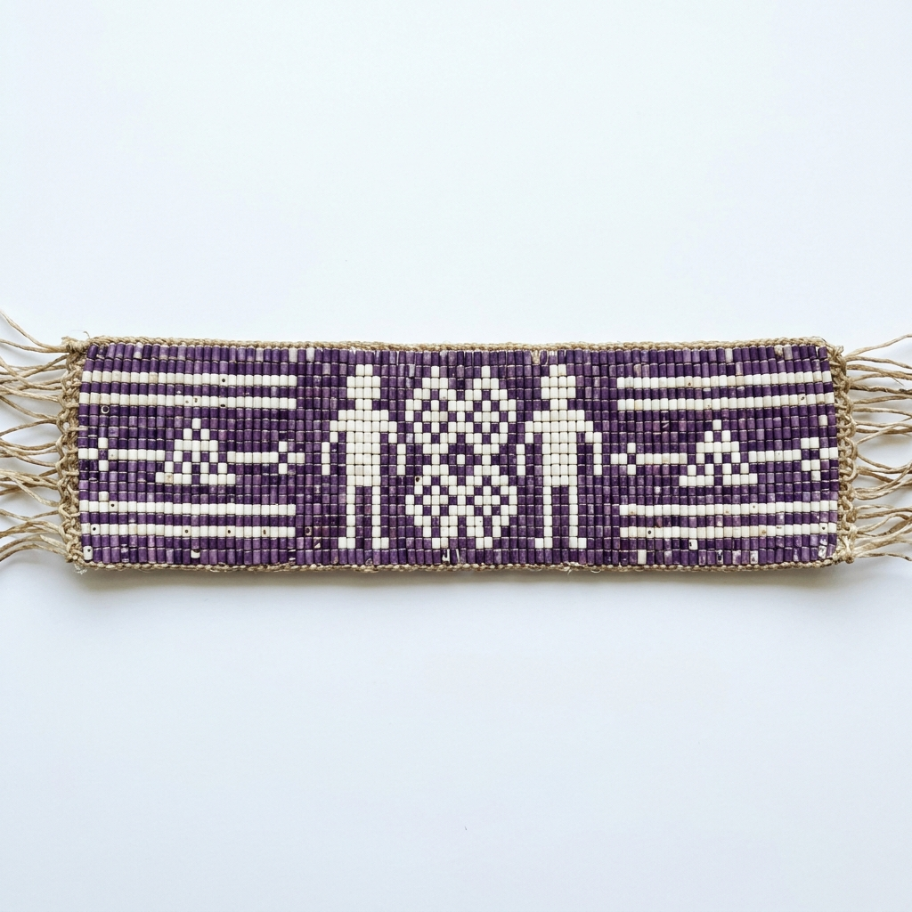

TOP SECRET // MISSION 01
Silent Wampum
Wampum belts were used to record important stories, laws, and treaties without using a single written word. They are made from purple and white shell beads.
Your mission is to design a belt that tells a story of Peace and Friendship.

Example of a Peace and Friendship pattern: Two figures joined by a path of white beads.
Step 1: Pick Your Colors
Traditionally, Purple (from Quahog shells) and White (from Whelk shells) were used. Pick two colors for your digital or paper design.
Step 2: Create Your Pattern
Use a grid to draw your symbols. A square represents a "bead." Can you draw two hands shaking or two people standing together?
Step 3: The Message
On the back of your drawing (or at the bottom), write one sentence: "This belt means..."
📡 Linking to Command Center...
← Back to Mission Control